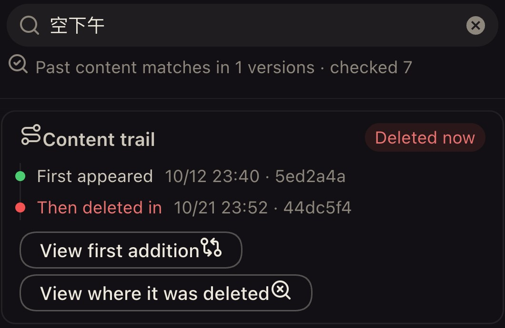
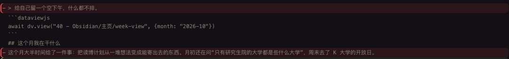
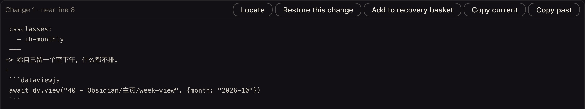
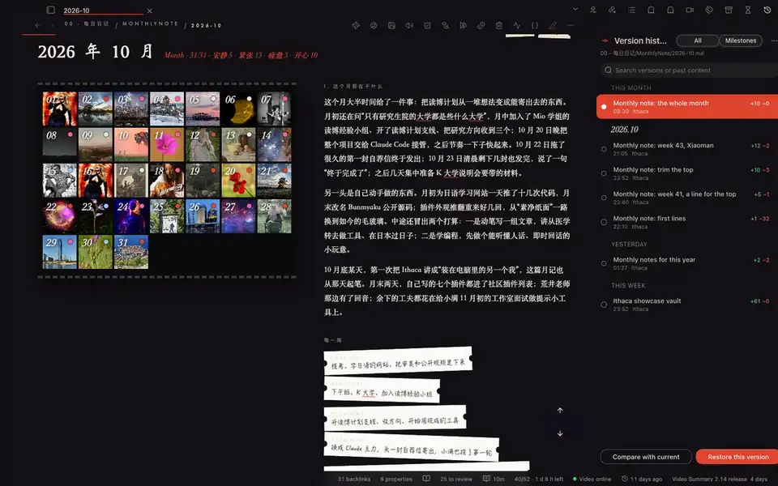

“Keep one afternoon empty. Plan nothing.” Gone from the note since October.
Find the sentence you deleted.
Git Note History searches every version of a note, shows which commit removed a line, and lets you take back only that part.
-
10/12 23:40 · 5ed2a4a
It was written here.
Type a few words you remember into the history sidebar. It checks past versions and draws the line's trail: first appeared, then deleted in.

-
10/21 23:52 · 44dc5f4
And removed here.
View where it was deleted opens that commit against the one before. The removed line is red and marked with a minus, so it reads in any theme.

-
today · working copy
Take back only that part.
Compare the old version with your note and restore that change after a preview, or copy the old text back. Every restore can be undone, and it stops if the note changed while you were looking.

Every note keeps its own past, a click away.

- Reads Git, never commitsIt only reads your repository; writing happens on your note, after a preview.
- No account, no networkEverything runs on your computer with the Git you already have.
- Twelve undosEvery restore can be taken back, and undo also stops if you have edited since.